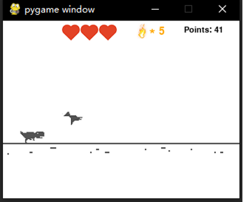

Design and Testing
PyGame
Initially, what we wanted to do is to only make a duplication of the dinosaur game. We searched for the
resources and successfully get some implementation of the dinosaur game. But after testing out some of the code
online, it turned out that not many of them were well implemented. After consideration, we decided to write a
game from scratch by ourselves. We've used pygame a few times during the lab sessions, so we decided to use
pygame to implement the game. Of course, we also added a lot of interesting features to the game.
We are going to add a health point system (HP) to the game, each time you hit an obstacle would result in HP
deduction. Of course, users can also collect hearts in the game to restore health points. We also added various
types of treasures such as gold and diamonds, by picking up them you can increase your points.
Moreover, whenever the little dinosaur gets a certain number of points, it can increase the number of times it
spews fire. Finally, for fun and playability of the game, we added a two-step jump function to the dinosaur.
This allows it to jump twice as high in the air, which greatly increases the upper limit of operation.
Inspired by the cheat codes in the 80's, we have also added a cheat mode to the game, which will not deduct the
health point but the score will be fixed after opening. As for the trigger conditions are certainly more hidden.
Dinosaur and Obstacles
The first step is to find the icon of different actions of the dinosaur and load them into the program. From a
website that has the resources of the game, we picked some of the pictures. Moreover, to make the game more
interesting, we get some funny icons like the health icon and the golden and diamonds icon. Then we used
Photoshop to draw different kinds of obstacles by changing the numbers of the cactus. Rivers are also draw by
ourselves.
To modify and debug the code more efficiently, we used object-oriented programing to design the game. Then it
comes to the core of the program: how to let the dinosaur run? Actually, we let the background icon and the
obstacles move from the right to the left. But how to randomly generate the obstacles so that the game will not
be boring?
We have tried a lot of methods like refreshing the game window or create a method to detect whether the
obstacles are vanished on the left. But the redundant code made the game run slowly and caused some faults.
Inspired by a video on YouTube, it comes up to our mind that the data structure “queue” can definitely solve
this problem in an easy way. Firstly, we created the class called dinosaur, obstacle and treasure. Then we give
different properties to the class like the axis of the icon, the type of the obstacles and treasures. Finally,
the “queue” is used to save the status of the obstacles. For example, when the obstacle is on the left side of
the game window, it pops out of the queue and when the program detect that the queue is empty, it will randomly
add a new obstacle into the queue. To achieve the random generation, we used the “random” function and give
different weight to different obstacles. Like the cactus, we can give a high weight because it is easy to be
crossed. However, the bomb and the river should have a low weight because they are hard obstacles. As it is
shown in figure 1, there are different kinds of obstacles and there are all very interesting and draw by
ourselves.
Jump and Double Jump
We spent a large portion on developing double jump. At first, we should achieve the single jump pf the
dinosaur. Simply we added a
variable to record the magnitude and direction of velocity. Why we use this method? Because in the real world,
due to the acceleration of gravity, our speed in the process of rising and falling is not uniform, but there is
a process of acceleration change. Our variable is equivalent to simulating acceleration. This variable decreases
over time, but it can also be negative, which means that the little dinosaur is falling. This can make the small
dinosaur move more smoothly and in line with the laws of physics. Moreover, the little dinosaur can duck down to
avoid the birds flying in the air.

To add the function of double jump, we divide the status of the dinosaur into three parts: on the ground, in
the air but first jump, in the air but double jump. For example, we it is on the ground or touch the ground, two
jump variables will be set to false. When it is in the air but first jump, after we pressing the double jump
button again, the acceleration variable described above will be reset to its initial value, allowing the
dinosaur to continue bouncing. This method also works for three-step and four-step jumps. It is a great progress
of the program and we get strong confidence from the success.
Then it comes to the health system and treasure system. We get the inspiration from the ECE 5725 lab so it is
easy to display the health icon on top of the game window. When there is a collision between the dinosaur and
the obstacle, the obstacle will pop out of the queue and the health count will be deducted. With the previous
experience, it is easy to do these works. Similarly, the treasure system can be duplicated from the obstacle
system. The only difference is that it will not deduct health and will increase the game points. For example,
the golden can increase 100 points and the diamond can increase 400 points so the diamond must be rare. If the
player is lucky enough, he can get the health treasure and increase the count of health.
Moreover, since it is a dinosaur, then fire-breathing is a necessary skill. When we press the fire button, the
dinosaur will generate fire and destroy all the obstacles in front of it. Thanks to the oop, we achieve it
easily because what we need to do is just to change the direction and the speed of the fire icon. When it has a
collision with the obstacles, the obstacle will also pop out of the queue.
So, the most important part of this game is the application of data structure “queue”.
Finally, we add a cheat mode into the game. With this mode, the dinosaur’s health will not be deducted. It can
help little children enjoy the game. However, the point will be fixed in the cheat mode. Actually, it is an
interesting part of this game so the way to trigger it may also be a little more difficult. When it is turned
on, the text cheat mode will be shown below the points.
The rest are some fragmented and detailed settings. Regarding the initial number of flames at the beginning of
the game, we set it to 5, which should be a more balanced number. There are also many bonus mechanisms. For
example, the number of flames will be increased by one every time you get 1000points. When the health points is
3, the health points will be increased by 500points. Gold coins can provide 100points, and diamonds can provide
400points. The speed of the obstacles in the game will keep getting faster as the points go up, so the game will
get harder and harder.
The last thing is to design the start screen and the game failure screen. Again, since we have trained 5725's
lab many times, it only took us two or three hours to finish the start and end screens. It is simple but live.
The crying dinosaur is also drawing by ourselves.
Control Scheme
So far, we have introduced three basic movements of the dinosaur, which are jump, duck, and fire. The original
Chrome dinosaur game uses keyboard as control input, and we would like to make the game more
interactive by introducing more modes of control.
Hand tracking
Initially, we thought hand tracking would be a straightforward solution because people were comfortable with
using their fingers to interact with smart phones. In this implementation, we used a package called Media Pipe,
which is an industry level framework for building multimodal, cross-platform applied ML pipelines. As you can
see in the below picture, there is a red dot at the position of the middle fingertip. Once the middle tip falls
in the region of the three movements, the dinosaur moves accordingly.
The model worked extremely well on our personal computer and is able to detect all the key points on the hand.
However, when we ran the program on RPi4 with 1GB memory, it had at least one second lag between frames which
made it too slow to control our game. After all, the dino game is still a action game which could not stand such
response delay.
OpenCV and Color Tracking
The delay is likely caused by the computational power require by Media Pipe. Therefore, we moved forward using
a more RPi-friendly implementation which only used OpenCV. The overall idea is to first filter the input video
frames with a color range filter, then track the center of the maximum contour.
To start with, users can put the object of color in front of the camera, and select the color accordingly. The
program would record the color selected by the user and generate a HSV color range.
The image would be smoothed using Gaussian filter and then converted to HSV color model for range selection.
inRange() was used to generate a filter (mask) keeping only the pixels with in the
selected color range. Dilations and erosions were performed to the filter to remove any small blobs. After
filtering, we got a maskedFrame which only contained pixels with color in the desired range. The
resulting maskedFrame is also displayed in the Color Calibration window.
maskedFrame was only used for visualization and intend to give users a better understanding of
what the program read in. We found contours in the resulting filter (mask) instead. If there was at
least one contours, precede with the one with maximum area. minEnclosingCircle was used to find the
maximum enclosing circle of that region and its center. To avoid mis recognition, we set a threshold for the
minimum radius of the circle. Once the detected radius is larger than the threshold, show the circle with the
center in the Color Calibration window.
Testing
The majority of testing the control scheme could be done visually due to the nature of our application. We could
simply show intermediary OpenCV filters, masks, and frames using imshow(). Most of the testing was
done on the desktop for the sake of convenience.
We have packed drawing functionalities, such as draw threshold lines and corresponding text
(drawThresholdAndText), draw
tails of object center (drawTailOnFrame), into functions. Those functions could be tested alone.